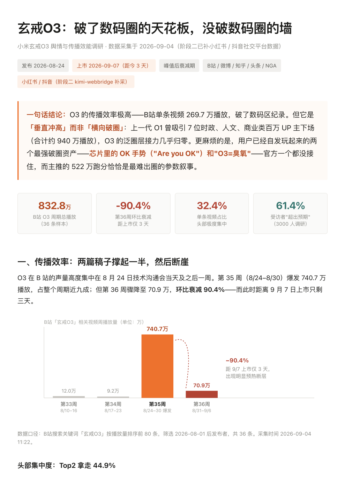

01
一句话建监测
输入关注点，自动生成监测方案：5 层关键词矩阵、数据源范围、采集频率、预警规则。确认后持续运行。
MYOU网络情报分析师是一个装进 AI 助手的免费 skill：填入关注点，自动建监测，定时采集 公众号 · 小红书 · 微博 · 新闻 · 抖音 · X · Reddit 的提及与评论区， 产出调研、分级预警、行动策略，以及可动态生成的本地实时看板。
无自建系统、无服务器、无账号。skill 是一份可执行的方法论文档，装进支持技能的 AI 助手即可开始。
输入关注点，自动生成监测方案：5 层关键词矩阵、数据源范围、采集频率、预警规则。确认后持续运行。
公众号 / 小红书 / 微博 / 新闻 / 抖音 / X / Reddit。浏览器工具优先，失败自动降级并标注缺口；评论区分层抽样并做平台级归纳。
国内大众话题侧重小红书/抖音，出海与技术话题侧重 X/Reddit。主源失败用备选源补齐，禁止静默跳过或旧数充新。
每轮先盘点实际采到什么，再单独生成分析逻辑。8 维度只是候选池；指标必须带样本量 n=，阈值按话题自身历史校准。
声量突增、负面占比、新关键词、KOL 负面、情感转向等，按红/橙/黄/蓝输出结构化告警。推送通道由宿主配置，skill 只负责结论。
决策者一页摘要 · 执行用标准报告 · 危机 10 分钟快报。每轮默认回答「相比上轮变了什么」。
首轮报告后询问是否开启。按本话题动态生成 HTML（文字解读 + 预测触发条件），每轮自动更新 data.js，浏览器直接打开。
预警 → 快报 → 处置建议（含对外口径）→ 预案沉淀 → 约 72 小时复盘更新，经验持续累积在本地卷宗里。
从自然语言识别场景，默认「舆情监控」。匹配优先级：金融单品 → 投资研究 → 产品发布 → 行业调研 → 舆情监控。
单品势能 · 热品排名 · 股价背离 · 催化剂 · 机会线索
公司 → 业务 → 社交意图 → 叙事 → 风险与策略线索
发布期口碑、购买意图、竞品对比与传播策略
趋势、竞争格局、政策与资本信号
品牌/事件风险预警与叙事主导权（默认）
前提：你的 AI 助手支持「技能（Skills）」。skill 只是方法论文档，装上即可用，无服务端。
支持技能安装的助手（Claude Code、WorkBuddy 等）会自动从 GitHub 拉取：
安装这个 skill https://github.com/modayishujia/myou-data-research.git也可以把仓库文件夹放进助手技能目录（如 ~/.claude/skills/）。
无需配置。触发词：调研、追踪、舆情、监控、采集、research。
① 触发 skill → ② 说出关注点 → 确认监测方案 → 自动采集与分析。下列示例可点击复制。
| 每轮产出 | 说明 |
|---|---|
| 一页摘要 | 当前态势 / 本轮关键变化 / 预警 / 建议，一页内读完 |
| 标准报告 | 分析逻辑 · 本轮变化 · 核心发现与解读 · 评论区总结 · 风险矩阵 · 预测 |
| 危机快报 | 红/橙预警触发：事件、证据、影响、处置与对外口径，约 10 分钟读完 |
| 结构化预警 | 级别 / 指标 / 证据 / SLA / 建议；是否推送到 IM 由宿主决定 |
| 本地看板 | 按话题动态生成的 HTML 态势页，含解读与预测，每轮刷新 |
| 数据沉淀 | 增量写入 research.md，历史不覆盖，可追溯、可编辑、可复盘 |
真实调研报告持续整理，以 PDF 形式补充。

B 站单条视频 269.7 万播放、第 36 周环比衰减 90.4%、头部集中度 32.4%、受话者「超出预期」61.4%——完整报告含传播效率、触达人群与破圈点分析。
查看完整报告 PDF →有额外需求——定制监控 workflow、专属监测方案、团队部署——或任何想法，欢迎留言。不打扰，按需聊。